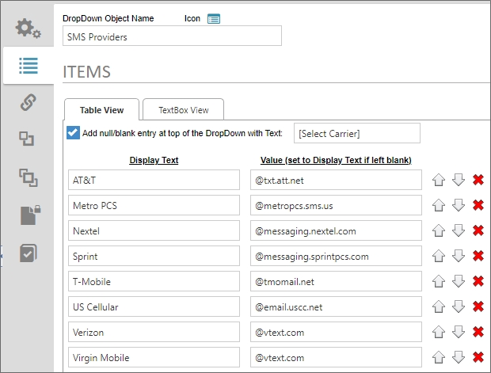
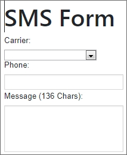
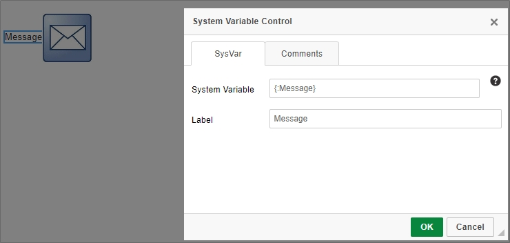
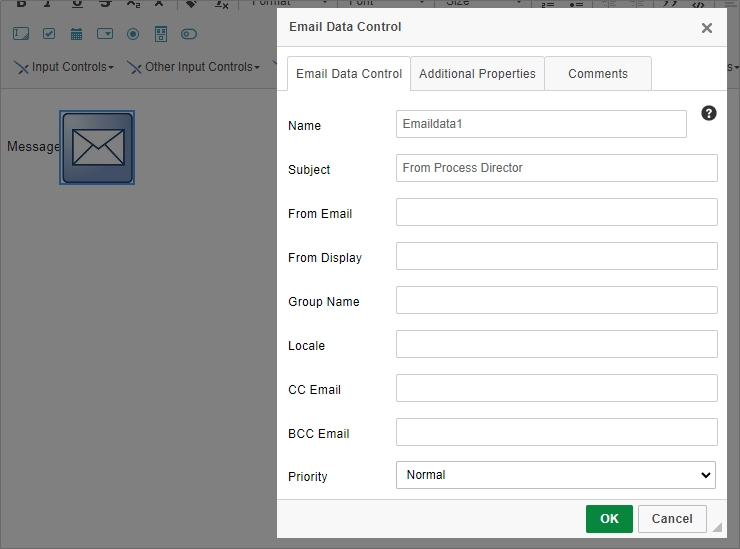
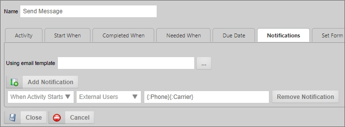
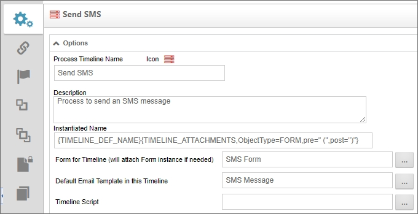
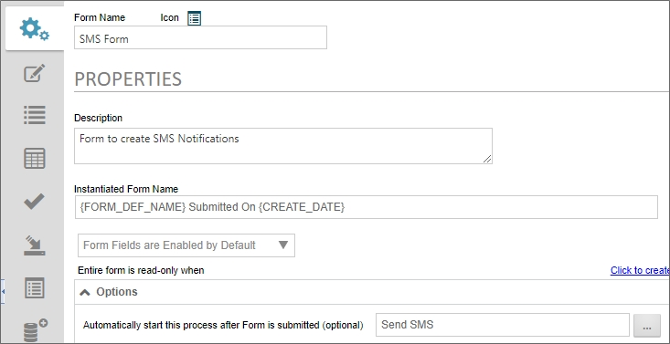
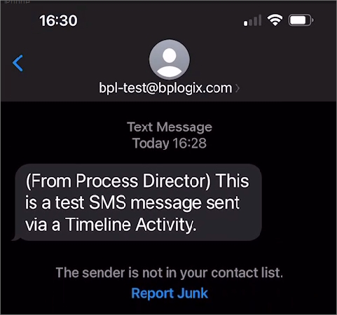

Though Process Director does not have built-in SMS messaging, all major cellular carriers provide an email-based API that converts emails sent to a specific domain into SMS text messages. To enable Email-to-SMS messages, each cellular carrier provides a specific email domain to which emails can be sent for SMS conversion.
| Carrier | Email Domain |
|---|---|
| AT&T | @txt.att.net |
| Metro PCS | @metropcs.sms.us |
| Nextel | @messaging.nextel.com |
| Sprint | @messaging.sprintpcs.com |
| T-Mobile | @tmomail.net |
| U.S. Cellular | @email.uscc.net |
| Verizon | @vtext.com |
| Virgin Mobile | @vtext.com |
Some constraints apply to email messages sent to these domains, as the number of characters allowed in an SMS message is limited. For instance, messages sent via vtext.com are limited to 160 characters, which includes any email Subject line. Within these constraints, however, email messages sent to these domains will be reliably converted to SMS.
In addition to the carrier email domain, you'll also need to supply the phone number of the recipient, using only digits, in order to create an email address in the format: 2025552845@vtext.com. So, to create a valid Email-to-SMS message, you'll need to know both the phone number and cellular carrier of the recipient. If either of these two values are incorrect, the recipient won't receive the message.
To create a small application that sends text messages from Process Director, you'll need to create four objects.
We need a Dropdown Object that will supply the carriers and email domains listed above. We'll use it to fill a Dropdown control on a Form, from which users can select the carrier to use for the SMS message. We'll also need to set a null/blank item in the Dropdown Object, so we can make the Dropdown control on the Form a required control.
In this example, We've created a Dropdown Object named SMS Providers and configured it.

We'll create a new form named SMS Form, and add three controls (with the appropriate labels for each control) to the Online Form Designer:
A Dropdown control named Carrier. Users will select the appropriate cellular provider from this control.
An Input control named Phone. Users will provide the phone number of the recipient in this control.
An Input control named Message, with the Rows property set to 3, to make an appropriately-sized message text box.

Once we've added the controls, we can save and close the Online Form Designer. We can set all three fields as required fields, using the Field Properties setting available to us in the Form Controls tab of the Form Definition. We can also set the Carrier control's Link to DropDown Object property to the SMS Providers dropdown object.
We'll also need to limit the size of the Message field by setting its Max property to prevent users from entering too many characters into the field. The exact number you set will vary, because Process Director will add a Subject to the email notification, and enclose it in parentheses, followed by a space. This additional text will consume characters from the SMS character limit, i.e., the number of characters in the Subject's text, plus three characters for the parentheses and a trailing space. So, the number we set in the Max property should be 160 characters, minus the number of characters in the email Subject. For instance, in our example, the email Subject and three extra characters will take up 24 characters, so we'll set the Max property of the Message field to 136.
Our email template will be named SMS Message, and will include two controls. The first control will be a System Variable control that is set to display the contents of the Message field.

The second control will be an Email Data control, which we'll use to set the Subject as From Process Director.

We're setting the subject as a fixed value, because if there is no Email Data control or no Subject set, Process Director will automatically add a subject with verbiage similar to: Timeline Activity Started - Activity Name. Setting a fixed subject enables us to specify the Max value of the Form's Message field.
Our Process Timeline will be named Send SMS, and will consist of a single Notify activity named Send Message. On the notifications tab of the activity, we'll configure the SMS notification message.

The notification will be set to send to External Users, and in the text box provided for the email address, we'll use System Variables to concatenate the Phone and Carrier fields, using the syntax: {:Phone}{:Carrier}.
Before we save and close the Process Timeline, we need to set the Form for Timeline property to the SMS Form, and the Default Email Template property to the SMS Message email template.

Our final step is to open the SMS Form and navigate to its Properties tab to set the Automatically start this process after Form is submitted property to the Send SMS Process Timeline.

Once we save and close the Form, we're ready to test it.
When the Form runs, you should select a carrier, type in the phone number and text message, then submit the form. The specified recipient should see a text message appear that looks similar to this:

Attribution: This walkthrough is based on a customer suggestion from Jeff Allen at UWSP.